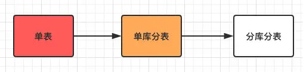
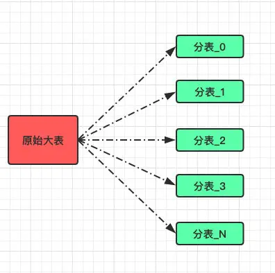
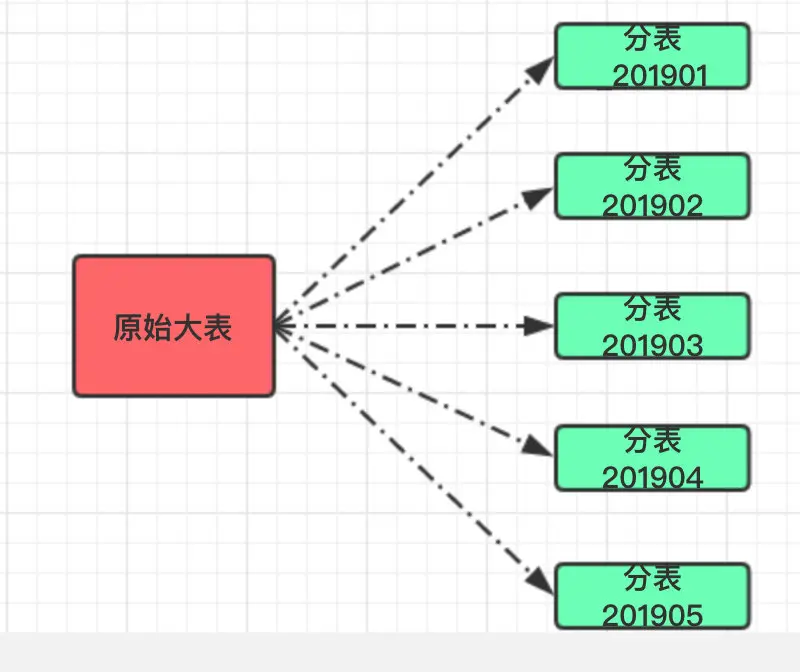
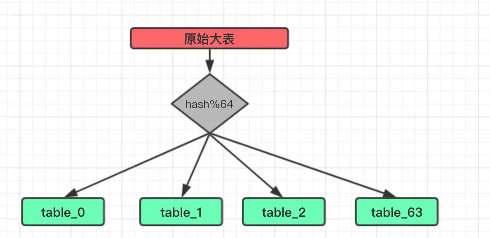
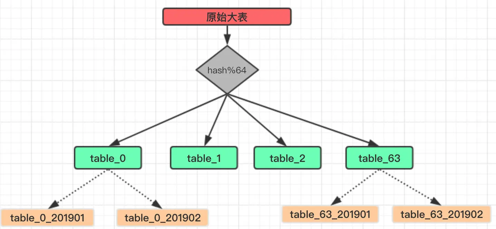
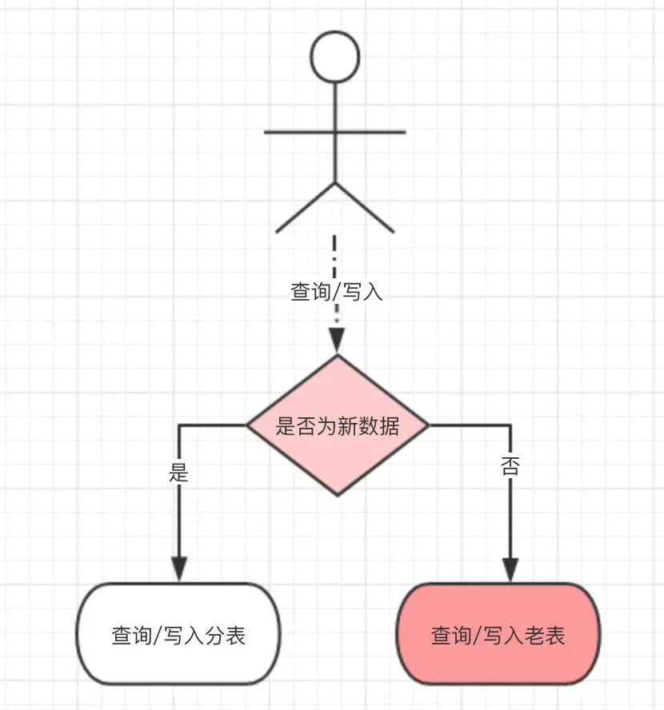
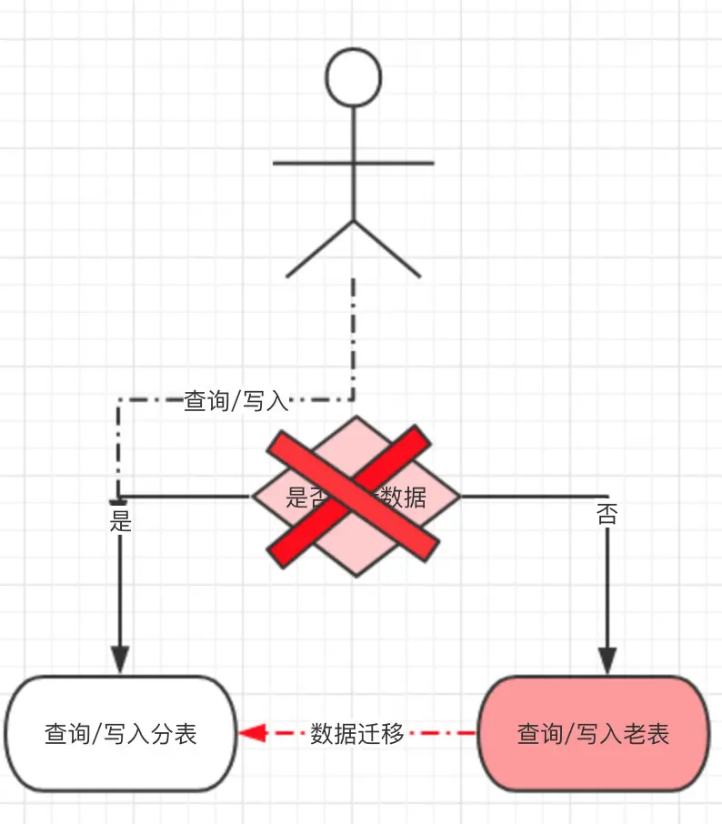

分库分表-最佳实践 ShardingDB
背景
前不久发过两篇关于分表的文章：
从标题可以看得出来，当时我们只做了分表；还是由于业务发展，截止到现在也做了分库，目前看来都还比较顺利，所以借着脑子还记得清楚来一次复盘。
先来回顾下整个分库分表的流程如下：

整个过程也很好理解，基本符合大部分公司的一个发展方向。
很少会有业务一开始就会设计为分库分表，虽说这样会减少后续的坑，但部分公司刚开始都是以业务为主。
直到业务发展到单表无法支撑时，自然而然会考虑分表甚至分库的事情。
于是本篇会作一次总结，之前提过的内容可能会再重复一次。
分表
首先讨论下什么样的情况下适合分表？
根据我的经验来看，当某张表的数据量已经达到千万甚至上亿，同时日增数据量在 2% 以上。
当然这些数字并不是绝对的，最重要的还是对这张表的写入和查询都已经影响到正常业务执行，比如查询速度明显下降，数据库整体 IO 居高不下等。
而谈到分表时我们着重讨论的还是水平分表；

也就是将一张大表数据通过某种路由算法将数据尽可能的均匀分配到 N 张小表中。
Range
而分表策略也有好几种，分别适用不同的场景。
首先第一种是按照范围划分，比如我们可以将某张表的创建时间按照日期划分存为月表；也可以将某张表的主键按照范围划分，比如
【110000】在一张表，【1000120000】在一张表，以此类推。

这样的分表适合需要对数据做归档处理，比如系统默认只提供近三个月历史数据的查询功能，这样也方便操作；只需要把三月之前的数据单独移走备份保存即可）。
这个方案有好处也有弊端：
- 好处是自带水平扩展，不需要过多干预。
- 缺点是可能会出现数据不均匀的情况（比如某个月请求暴增）。
Hash
按照日期这样的范围分表固然简单，但适用范围还是比较窄；毕竟我们大部分的数据查询都不想带上时间。
比如某个用户想查询他产生的所有订单信息，这是很常见的需求。
于是我们分表的维度就得改改，分表算法可以采用主流的 hash+mod 的组合。
这是一个经典的算法，大名鼎鼎的 HashMap 也是这样来存储数据。
假设我们这里将原有的一张大表订单信息分为 64 张分表：

这里的 hash 便是将我们需要分表的字段进行一次散列运算，使得经过散列的数据尽可能的均匀并且不重复。
当然如果本身这个字段就是一个整形并且不重复也可以省略这个步骤，直接进行 Mod 得到分表下标即可。
分表数量选择
至于这里的分表数量（64）也是有讲究的，具体设为多少这个没有标准值，需要根据自身业务发展，数据增量进行预估。
根据我个人的经验来看，至少需要保证分好之后的小表在业务发展的几年之内都不会出现单表数据量过大（比如达到千万级）。
我更倾向于在数据库可接受的范围内尽可能的增大这个分表数，毕竟如果后续小表也达到瓶颈需要再进行一次分表扩容，那是非常痛苦的。
目前笔者还没经历这一步，所以本文没有相关介绍。
但是这个数量又不是瞎选的，和 HashMap 一样，也建议得是 2^n，这样可以方便在扩容的时尽可能的少迁移数据。
Range + Hash
当然还有一种思路，Range 和 Hash 是否可以混用。
比如我们一开始采用的是 Hash 分表，但是数据增长巨大，导致每张分表数据很快达到瓶颈，这样就不得不再做扩容，比如由 64 张表扩容到 256 张。
但扩容时想要做到不停机迁移数据非常困难，即便是停机，那停多久呢？也不好说。
所以我们是否可以在 Mod 分表的基础上再分为月表，借助于 Range 自身的扩展性就不用考虑后续数据迁移的事情了。

这种方式理论可行，但我没有实际用过，给大家的思路做个参考吧。
烦人的数据迁移
分表规则弄好后其实只是完成了分表的第一步，真正麻烦的是数据迁移，或者说是如何做到对业务影响最小的数据迁移。
除非是一开始就做了分表，所以数据迁移这一步骤肯定是跑不掉的。
下面整理下目前我们的做法供大家参考：
- 一旦分表上线后所有的数据写入、查询都是针对于分表的，所以原有大表内的数据必须得迁移到分表里，不然对业务的影响极大。
- 我们估算了对一张 2 亿左右的表进行迁移，自己写的迁移程序，大概需要花 4~5 天的时间才能完成迁移。
- 意味着这段时间内，以前的数据对用户是不可见的，显然这样业务不能接受。
- 于是我们做了一个兼容处理：分表改造上线后，所有新产生的数据写入分表，但对历史数据的操作还走老表，这样就少了数据迁移这一步骤。
- 只是需要在操作数据之前做一次路由判断，当新数据产生的足够多时（我们是两个月时间），几乎所有的操作都是针对于分表，再从库启动数据迁移，数据迁移完毕后将原有的路由判断去掉。
- 最后所有的数据都从分表产生和写入。
至此整个分表操作完成。


业务兼容
同时分表之后还需要兼容其他业务；比如原有的报表业务、分页查询等，现在来看看我们是如何处理的。
报表
首先是报表，没分表之前之间查询一张表就搞定了，现在不同，由一张表变为 N 张表。
所以原有的查询要改为遍历所有的分表，考虑到性能可以利用多线程并发查询分表数据然后汇总。
不过只依靠 Java 来对这么大量的数据做统计分析还是不现实，刚开始可以应付过去，后续还得用上大数据平台来处理。
查询
再一个是查询，原有的分页查询肯定是不能用了，毕竟对上亿的数据分页其实没什么意义。
只能提供通过分表字段的查询，比如是按照订单 ID 分表，那查询条件就得带上这个字段，不然就会涉及到遍历所有表。
这也是所有分表之后都会遇到的一个问题，除非不用 MySQL 这类关系型数据库。
分库
分表完成后可以解决单表的压力，但数据库本身的压力却没有下降。
我们在完成分表之后的一个月内又由于数据库里”其他表”的写入导致整个数据库 IO 增加，而且这些”其他表”还和业务关系不大。
也就是说一些可有可无的数据导致了整体业务受影响，这是非常不划算的事情。
于是我们便把这几张表单独移到一个新的数据库中，完全和现有的业务隔离开来。
这样就会涉及到几个改造：
- 应用自身对这些数据的查询、写入都要改为调用一个独立的
Dubbo服务，由这个服务对迁移的表进行操作。 - 暂时不做数据迁移，所以查询时也得按照分表那样做一个兼容，如果查询老数据就要在当前库查询，新数据就要调用
Dubbo接口进行查询。 - 对这些表的一些关联查询也得改造为查询
Dubbo接口，在内存中进行拼接即可。 - 如果数据量确实很大，也可将同步的
Dubbo接口换为写入消息队列来提高吞吐量。
目前我们将这类数据量巨大但对业务不太影响的表单独迁到一个库后，数据库的整体 IO 下降明显，业务也恢复正常。
总结
最后我们还需要做一步历史数据归档的操作，将 N 个月之前的数据要定期迁移到 HBASE 之类存储，保证 MySQL
中的数据一直保持在一个可接受的范围。
而归档数据的查询便依赖于大数据提供服务。
本次分库分表是一次非常难得的实践操作，网上大部分的资料都是在汽车出厂前就换好了轮胎。
而我们大部分碰到的场景都是要对高速路上跑着的车子换胎，一不小心就”车毁人亡”。
来源：https://crossoverjie.top/2019/07/24/framework-design/sharding-db-03/